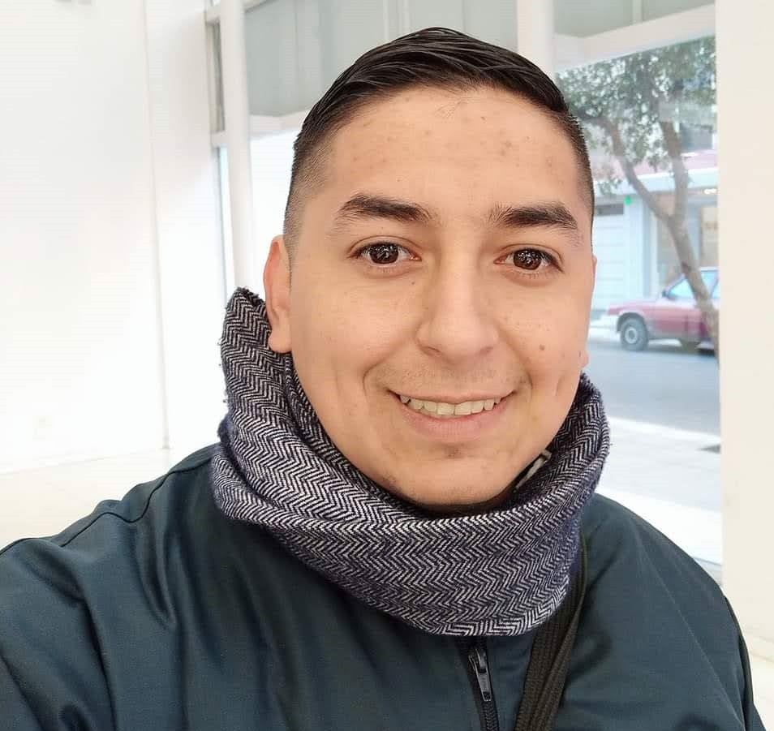

Jonathan Villegas

Descripción Personal
- Edad:30 años
- Estado:Soltero
- Fecha de nacimiento:08/11/1990
- Hijo: 1
Educación
- Secundario Completo: Colegio N°12 Dr.Ramon Carrillo
- Universitario en curso: Tecnicatura en desarrollo de software-Universidad de La Punta
Experiencias Laborales
- Mesa de informes: Universidad Nacional de San Luis- 2013 al 2015
- Mixer SA: Agente de ventas de DIRECTV- 2015 al 2021
Skills
- Conocimientos basicos en HTML, JavaScript, SQL y Java
- Facilidad al trabajar en equipo
- Disponible para aprender nuevas habilidades
Hobbies
- Disfrutar del tiempo con mi hijo
- Jugar Video Juegos
- Programar y mejorar los conocimientos que tengo
Motivos
Mi motivación para estudiar la carrera, es mi amor por la tecnología y el entender cómo se desarrollan, lo que me llevo a estudiar la Tecnicatura en Desarrollo de Software la cual me encuentro cursando el segundo año. Actualmente me encuentro desempleado y comprendo que el mercado laboral actualmente está destinado a este campo. También estoy dispuesto a seguir adquiriendo conocimiento, aun cuando se finalice la carrera seguiré buscando conocimiento y adquiriendo mayor contenido.